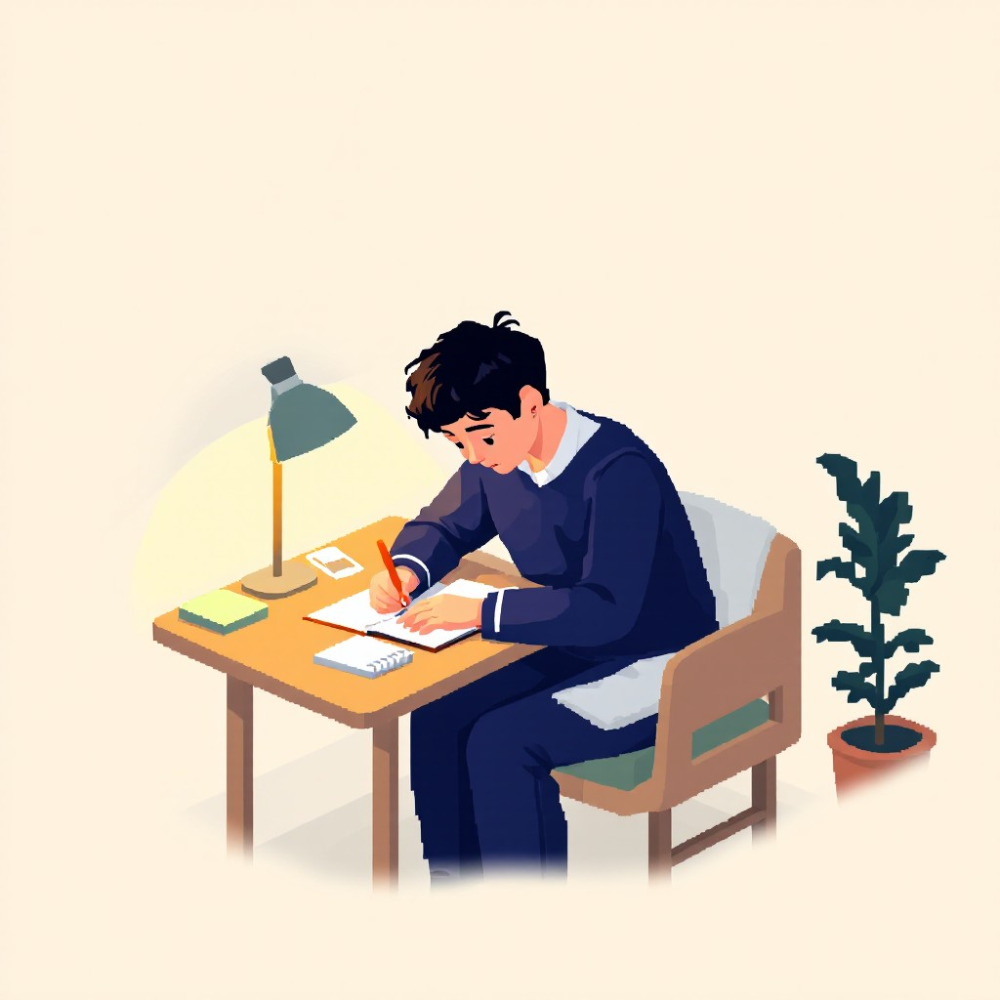

از پرسش تا کشف
پژوهش یکی از مسیرهای مهم توسعه تواناییهای علمی و فکری دانشآموزان است.
پژوهش به ما میآموزد که برای رسیدن به پاسخ، تنها به دانستههای قبلی
اکتفا نکنیم؛ بلکه با مشاهده، بررسی، آزمایش و تحلیل، مسیر کشف
ناشناختهها را دنبال کنیم. هر پژوهش با یک پرسش آغاز میشود؛ پرسشی که
شاید در ابتدا ساده به نظر برسد، اما میتواند زمینهساز کشف ایدهها و
راهکارهای تازه باشد. در این مسیر، کنجکاوی و علاقه به یادگیری نقش مهمی
در پیشرفت انسان دارند.
اهمیت پژوهش در پرورش استعدادها
پژوهش فرصتی برای تبدیل دانش نظری به تجربه و شناخت عمیقتر است.
دانشآموزان در جریان فعالیتهای پژوهشی یاد میگیرند چگونه مستقل فکر
کنند، اطلاعات را ارزیابی کنند و برای مسائل مختلف راهحل پیدا کنند. این
فرایند علاوه بر افزایش دانش، مهارتهایی مانند تفکر انتقادی، استدلال،
تصمیمگیری و مسئولیتپذیری را نیز تقویت میکند. پژوهش به دانشآموز کمک
میکند به جای پذیرش ساده اطلاعات، درباره درستی آنها سؤال کند و برای
رسیدن به نتیجه، شواهد مناسبی بیابد.
زمینههای مختلف پژوهشی
دنیای پژوهش محدود به یک رشته یا موضوع خاص نیست. هر پدیدهای در اطراف
ما میتواند نقطه شروع یک تحقیق باشد. از شناخت قوانین طبیعت گرفته تا
بررسی مسائل اجتماعی و توسعه فناوری، همگی فرصتهایی برای یادگیری و کشف
فراهم میکنند.
علوم پایه
مطالعه پدیدههای طبیعی، قوانین علمی و شناخت بهتر جهان پیرامون.
فناوری و مهندسی
طراحی ابزارها، توسعه فناوریهای جدید و یافتن راهکارهای کاربردی.
علوم انسانی
بررسی رفتار انسان، فرهنگ، تاریخ و مسائل اجتماعی.
محیط زیست
شناخت چالشهای زیستمحیطی و بررسی راههای حفاظت از منابع طبیعی.
علوم پزشکی و زیستی
شناخت موجودات زنده، فرایندهای زیستی و مسائل مرتبط با سلامت.
ریاضیات و علوم رایانه
بررسی الگوها، حل مسائل و توسعه روشهای محاسباتی.

خلاقیت و نوآوری
خلاقیت توانایی نگاه کردن به مسائل از زاویهای متفاوت و ارائه
ایدههای تازه است. بسیاری از پیشرفتهای علمی و فناوری با طرح یک ایده
غیرمعمول آغاز شدهاند؛ ایدهای که با تلاش، بررسی و توسعه به نتیجهای
کاربردی تبدیل شده است. نوآوری زمانی شکل میگیرد که یک ایده تازه به
راهکاری عملی و ارزشمند تبدیل شود. این مسیر ممکن است به طراحی یک
ابزار جدید، بهبود یک روش موجود یا ارائه راهحلی متفاوت برای یک مشکل
منجر شود. در محیطهای آموزشی، ایجاد فرصت برای تجربه کردن، پرسیدن
سؤال و بررسی راههای مختلف، میتواند زمینه رشد خلاقیت و شکلگیری
نوآوری را فراهم کند.
نقش دانشآموزان در تولید دانش
دانشآموزان تنها دریافتکنندگان اطلاعات نیستند؛ آنها میتوانند با
مشاهده دقیق، پرسشگری و انجام فعالیتهای پژوهشی در تولید و گسترش دانش
نیز نقش داشته باشند. مشارکت در پروژههای علمی، انجام آزمایشها، مطالعه
منابع معتبر و همکاری با دیگر دانشآموزان، فرصتهایی برای تجربه پژوهش
فراهم میکنند. این فعالیتها به دانشآموزان کمک میکنند تا آموختههای
خود را در موقعیتهای واقعی به کار بگیرند و تواناییهایشان را توسعه
دهند.
از ایده تا دستاورد
تبدیل یک ایده به دستاورد، مسیری است که به زمان، تلاش و پشتکار نیاز
دارد. یک طرح اولیه ممکن است در مراحل نخست با محدودیتها و پرسشهای
زیادی روبهرو شود؛ اما بررسی دقیق، اصلاح اشتباهات و استفاده از
تجربههای گذشته میتواند آن را به نتیجهای ارزشمند برساند. در این
مسیر، شکستهای اولیه نیز بخشی از فرایند یادگیری هستند. هر تجربه فرصتی
برای شناخت بهتر مسئله و پیدا کردن راههای مناسبتر فراهم میکند.
دستاوردهای علمی زمانی ارزشمندتر میشوند که علاوه بر نشان دادن توانایی
پژوهشگر، بتوانند دانشی تازه ایجاد کنند یا به حل مسئلهای واقعی کمک
کنند.
آیندهای که با پرسشگری ساخته میشود
پیشرفت جوامع به توانایی آنها در شناخت مسائل و یافتن راهحلهای تازه
وابسته است. پژوهش و نوآوری از مهمترین ابزارهای تحقق این هدف هستند و
میتوانند زمینهساز تغییرات مثبت در حوزههای گوناگون شوند. پرورش روحیه
پرسشگری از دوران دانشآموزی، فرصتی برای شکلگیری نسلی آگاه، خلاق و
مسئولیتپذیر فراهم میکند؛ نسلی که به جای محدود شدن به دانستههای
امروز، همواره به دنبال کشف راههای بهتر برای فرداست.
آینده را اندیشههایی میسازند که امروز جرئت پرسیدن و تلاش برای یافتن
پاسخ را دارند.